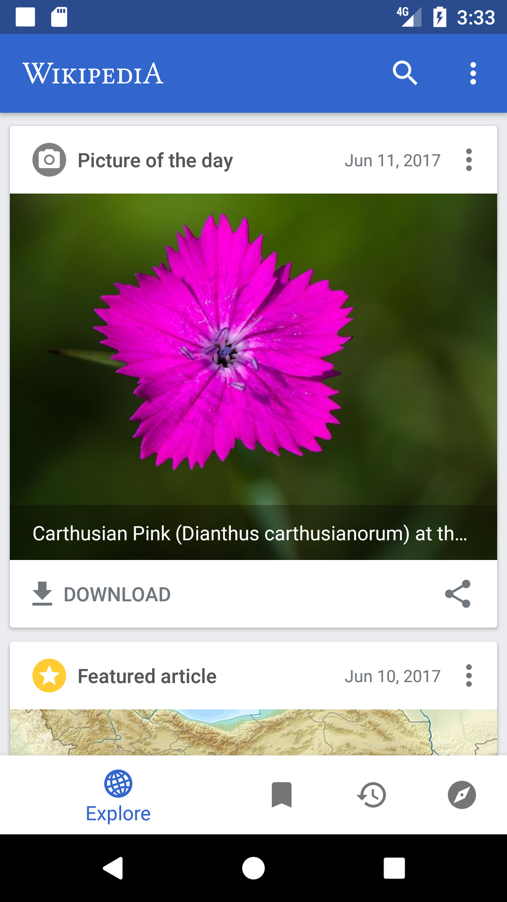
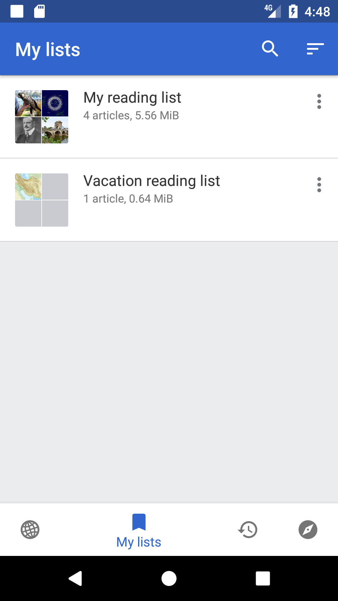
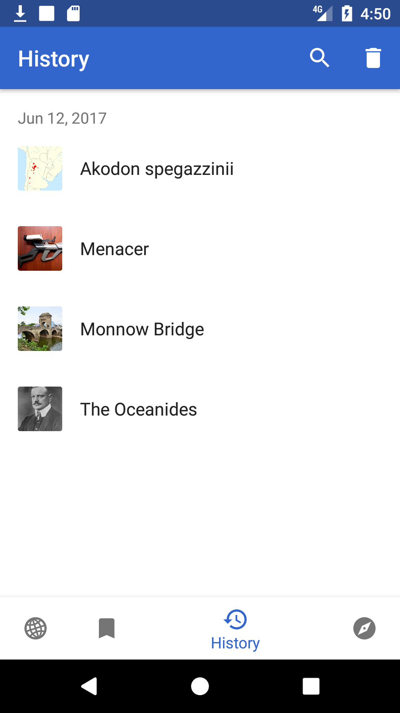
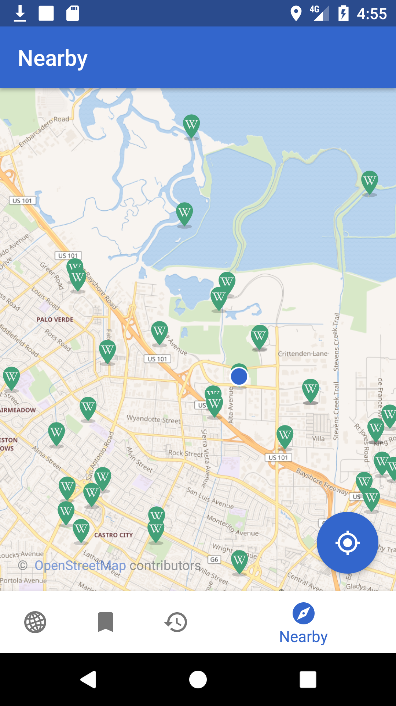
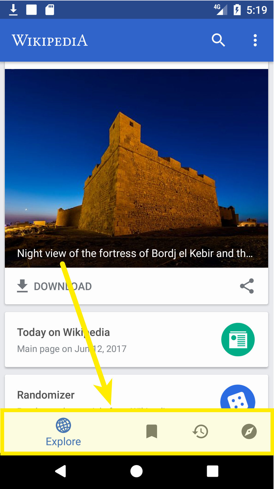

class: center, middle # Become a better Android developer ## with examples and patterns from open source --- # About me * [@beyang](https://twitter.com/beyang) * CTO, [Sourcegraph](https://sourcegraph.com/) * Used to be a T.A. --- <div style="height: 100%; position: absolute; top: 30%;"> Good artists copy. Great artists steal. <br><br> —Picasso </div> --- # What we're going to talk about * Three open-source Android apps and how they work, including how they * Use the model-view-adapter pattern * Efficiently load and display large feeds of data * Persist data to a SQLite database * Use common third-party libraries to make HTTP API requests and bind view data to the underlying model * Unit test * Manage memory of large data items (images) efficiently * A process you can use to efficiently understand how other apps work * (Briefly) The tool we built with Gradle to accelerate this process ??? Whirlwind tour of how to Android with examples from open source. The goal is not that you understand how each and every example works, but that you know there exists an example and can use these slides later as a reference. What should you immediately take away from this talk? A process for leveraging open source to boost how much code you've seen. * The graph of code is a powerful resource you can use to grow your own programming talents. * Sourcegraph is a semantic index of all the Java code in the world designed to make it easier to explore. * Most of what you do when you build a conceptual model of code reduces to walking forward and backward along the graph of code. * Because Sourcegraph indexes all this code and interfaces with a lot of members in the Java community (both inside companies and in open source), we've seen a lot of patterns and anti-patterns for what works well. * Here's a sampling of the knowledge that the graph contains, curated using our experience indexing it. --- # App #1: [Wikipedia](https://play.google.com/store/apps/details?id=org.wikipedia)     --- # App #1: [Wikipedia](https://play.google.com/store/apps/details?id=org.wikipedia) A medium-sized [open-source app](https://github.com/wikimedia/apps-android-wikipedia). * 738 Java files * 69,257 lines of code * 2,544 lines of comments * 9 out of 10 classes & methods have no docstring * 5,378 commits over 4 years If the Wikipedia app were a book, it'd be half the length of *Moby Dick*.<sup>*</sup> .footer[\* Assuming 1 LoC == 1.5 words] -- ## *Where are the Spark Notes?* ??? IMPORTANT: At this point, ask everyone to pull out their Android phones, download the Wikipedia app and visit the slides link to follow along. Make people follow along. Point out that the links to source code should be followed, and folks should stay in the source code (and only refer back to the slides if they get lost). --- # Ways to dive into code Good approaches: * Read the docs * Fix a bug * Get a tutorial from a coworker Bad approach: * Try to read the code --- # Problems with reading code A codebase is like a dictionary. * A bunch of definitions * Definitions reference one another * No obvious place to start * No obvious narrative arc * Don't want to read the whole thing So reading it is **boring**. --- # Turn it into a conversation 1. Ask a question of interest 2. Find the answer 3. Ask another question ??? Many ways to read and understand code. This is just one way. It has worked well for me as a professional programmer and worked well for me in teaching students as a T.A. -- ### Some icebreakers: 1. Where's your "main" function? 1. How do you arrive at your initial state? 1. What options do you present to the user from there? ??? Just like a conversation with a person, there are a few standard "icebreakers" you can use to get the conversation rolling. --- ### Wikipedia, where's your "main" function? ??? * Any Android developer knows that Android apps are built around "activities." * Main activity is called `MainActivity`. The initializer method for an `Activity` instance is `onCreate`, so let's start there. -- Looking for: ```java public class MainActivity { public void onCreate(Bundle savedInstanceState) { ... } } ``` -- Search for the main activity: [](https://sourcegraph.com/github.com/wikimedia/apps-android-wikipedia@8857c36d6a4ed4c106086d3436c2e3a4afd08f8c/-/blob/app/src/main/java/org/wikipedia/main/MainActivity.java#L13:14-13:26) ([source](https://sourcegraph.com/github.com/wikimedia/apps-android-wikipedia@8857c36d6a4ed4c106086d3436c2e3a4afd08f8c/-/blob/app/src/main/java/org/wikipedia/main/MainActivity.java#L13:14-13:26)) --- ### Wikipedia, how do you arrive at your initial state? `MainActivity` itself doesn't tell us, but it's a subclass, so let's walk up its inheritance tree ([source](https://sourcegraph.com/github.com/wikimedia/apps-android-wikipedia@8857c36d6a4ed4c106086d3436c2e3a4afd08f8c/-/blob/app/src/main/java/org/wikipedia/main/MainActivity.java#L21:29-21:40)): * `MainActivity` ```java public class MainActivity extends SingleFragmentToolbarActivity<MainFragment> ``` * *inherits* `SingleFragmentToolbarActivity` * *inherits* `SingleFragmentActivity` * *contains* `SingleFragmentActivity.onCreate` ```java addFragment(createFragment()); ``` * *calls* `MainActivity.createFragment` ```java return MainFragment.newInstance(); ``` * *calls* `MainFragment.newInstance` * *initialized with* `MainFragment.onCreateView` ??? TODO: hyperlinks to code on Sourcegraph --- ### Wikipedia, how do you arrive at your initial state? (continued) * `MainFragment.onCreateView` ```java View view = inflater.inflate(R.layout.fragment_main, container, false); unbinder = ButterKnife.bind(this, view); ``` * *references* `resources/fragment_main.xml` ```xml <org.wikipedia.navtab.NavTabLayout ``` * *references* `NavTabLayout` ```java private void setTabViews() { for (int i = 0; i < NavTab.size(); i++) { NavTab navTab = NavTab.of(i); getMenu().add(Menu.NONE, i, i, navTab.text()).setIcon(navTab.icon()); } ``` * *calls* `NavTab.of` * *references* `NavTab.EXPLORE` * *references* `FeedFragment.newInstance` --- Note the use of [Butterknife](https://github.com/JakeWharton/butterknife) to [bind view objects to fields in the fragments](https://sourcegraph.com/github.com/wikimedia/apps-android-wikipedia@8857c36d6a4ed4c106086d3436c2e3a4afd08f8c/-/blob/app/src/main/java/org/wikipedia/main/MainFragment.java#L106:32-106:36). ```java public class MainFragment extends Fragment implements BackPressedHandler, FeedFragment.Callback, NearbyFragment.Callback, HistoryFragment.Callback, SearchFragment.Callback, LinkPreviewDialog.Callback { ... @BindView(R.id.fragment_main_view_pager) ViewPager viewPager; @BindView(R.id.fragment_main_nav_tab_layout) NavTabLayout tabLayout; private Unbinder unbinder; ... @Nullable @Override public View onCreateView(LayoutInflater inflater, @Nullable ViewGroup container, @Nullable Bundle savedInstanceState) { ... unbinder = ButterKnife.bind(this, view); ... } ... @Override public void onDestroyView() { unbinder.unbind(); unbinder = null; super.onDestroyView(); } ... } ``` --- ### What can the user do from here? The `NavTab` class outlines exactly what the user's options are: ```java public enum NavTab implements EnumCode { EXPLORE(R.string.nav_item_feed, R.drawable.ic_globe) { @NonNull @Override public Fragment newInstance() { return FeedFragment.newInstance(); } }, READING_LISTS(R.string.nav_item_reading_lists, R.drawable.ic_bookmark_white_24dp) { @NonNull @Override public Fragment newInstance() { return ReadingListsFragment.newInstance(); } }, HISTORY(R.string.nav_item_history, R.drawable.ic_restore_black_24dp) { @NonNull @Override public Fragment newInstance() { return HistoryFragment.newInstance(); } }, NEARBY(R.string.nav_item_nearby, R.drawable.ic_explore_black_24dp) { @NonNull @Override public Fragment newInstance() { return NearbyFragment.newInstance(); } }; ... } ``` --- ### What can the user do from here? And these map clearly onto what's present in the UI:  --- ### Side note: EnumCode for checked conversion of ints to enums ```java public interface EnumCode { int code(); } ``` ```java public enum HttpStatus implements EnumCode { SYNCHRONIZED(0), OUTDATED(1), MODIFIED(2), ... private static final EnumCodeMap<HttpStatus> MAP = new EnumCodeMap<>(HttpStatus.class); private final int code; @NonNull public static HttpStatus of(int code) { return MAP.get(code); } ... ``` ([source](https://sourcegraph.com/github.com/wikimedia/apps-android-wikipedia@8857c36d6a4ed4c106086d3436c2e3a4afd08f8c/-/blob/app/src/main/java/org/wikipedia/database/http/HttpStatus.java#L9:35-9:43)) --- # Overall application structure We now know what the backbone classes are in the Wikipedia app: * `MainActivity` * `MainFragment` * `FeedFragment` * `HistoryFragment` * `NearbyFragment` * `ReadingListsFragment` ??? Now you have a picture of the app in broad strokes. --- # Let's continue the conversation 1. How does the feed work? 1. How do the reading lists work? 1. How does the map work? 1. How is this app tested? ??? 1. How does the feed work? * Are there any clever performance hacks? How does pull-down refresh work? 1. How are reading lists stored persistently? 1. How does the app load nearby points of interest in the map view? How does it do so without blocking? How does it do so efficiently? 1. How is this app tested? --- ### How does the feed work? <center></center> * How does it load and display cards efficiently? * How does it fetch data from the server? * How do I get "pull-down-to-refresh"? --- ### How does the feed work? `FeedFragment` holds references to models and views for the feed. ```java public class FeedFragment extends Fragment implements BackPressedHandler { @BindView(R.id.feed_swipe_refresh_layout) SwipeRefreshLayout swipeRefreshLayout; @BindView(R.id.fragment_feed_feed) FeedView feedView; @BindView(R.id.fragment_feed_header) View feedHeader; private FeedAdapter<?> feedAdapter; private WikipediaApp app; private FeedCoordinator coordinator; private FeedFunnel funnel; private final FeedAdapter.Callback feedCallback = new FeedCallback(); private FeedScrollListener feedScrollListener = new FeedScrollListener(); private OverflowCallback overflowCallback = new OverflowCallback(); ... @Nullable @Override public View onCreateView(LayoutInflater inflater, @Nullable ViewGroup container, @Nullable Bundle savedInstanceState) { super.onCreateView(inflater, container, savedInstanceState); View view = inflater.inflate(R.layout.fragment_feed, container, false); ... } ... } ``` ([source](https://sourcegraph.com/github.com/wikimedia/apps-android-wikipedia@8857c36d6a4ed4c106086d3436c2e3a4afd08f8c/-/blob/app/src/main/java/org/wikipedia/feed/FeedFragment.java#L44:14-44:26)) --- ### How does the feed view work? ```java public class FeedFragment extends Fragment implements BackPressedHandler { ... @BindView(R.id.fragment_feed_feed) FeedView feedView; ``` `FeedView` is a great example of using the SDK's `RecyclerView`, "a flexible view for providing a limited window into a large data set." ```java public class FeedView extends AutoFitRecyclerView { private StaggeredGridLayoutManager recyclerLayoutManager; @Nullable private ItemTouchHelper itemTouchHelper; public FeedView(Context context) { super(context); init(); } public FeedView(Context context, AttributeSet attrs) { super(context, attrs); init(); } ... ``` Side note: the `RecyclerView` [documentation](https://developer.android.com/reference/android/support/v7/widget/RecyclerView.html) is 13,000 words long. --- ### How do you initialize the feed view? `FeedFragment` wires up the view to adapter, callback, and scrollback listener. ```java @Nullable @Override public View onCreateView(LayoutInflater inflater, @Nullable ViewGroup container, @Nullable Bundle savedInstanceState) { ... feedAdapter = new FeedAdapter<>(coordinator, feedCallback); feedView.setAdapter(feedAdapter); feedView.setCallback(feedCallback); feedView.addOnScrollListener(feedScrollListener); } ``` The callbacks handle user-triggered events from the view. The adapter provides view lifecycle handler methods and view data provider methods. ([source](https://sourcegraph.com/github.com/wikimedia/apps-android-wikipedia@5ed559f1e05e6e3379a427c49d52578a06b454d7/-/blob/app/src/main/java/org/wikipedia/feed/FeedFragment.java#L97-101)) --- ### Where are the card views created and updated? ```java public class FeedAdapter<T extends View & FeedCardView<?>> extends DefaultRecyclerAdapter<Card, T> { ... @Override public DefaultViewHolder<T> onCreateViewHolder(ViewGroup parent, int viewType) { return new DefaultViewHolder<>(newView(parent.getContext(), viewType)); } @Override public void onBindViewHolder(DefaultViewHolder<T> holder, int position) { Card item = item(position); T view = holder.getView(); if (coordinator.finished() && position == getItemCount() - 1 && callback != null) { callback.onRequestMore(); } //noinspection unchecked ((FeedCardView<Card>) view).setCard(item); if (view instanceof OfflineCardView && position == 1) { ((OfflineCardView) view).setTopPadding(); } } ``` --- ### How do you customize card appearance? Different card view classes, identified by enum backed by `EnumCode`: ```java public enum CardType implements EnumCode { SEARCH_BAR(0) { @NonNull @Override public FeedCardView<?> newView(@NonNull Context ctx) { return new SearchCardView(ctx); } }, CONTINUE_READING(1) { @NonNull @Override public FeedCardView<?> newView(@NonNull Context ctx) { return new ContinueReadingCardView(ctx); } }, BECAUSE_YOU_READ_LIST(2) { @NonNull @Override public FeedCardView<?> newView(@NonNull Context ctx) { return new BecauseYouReadCardView(ctx); } }, MOST_READ_LIST(3) { @NonNull @Override public FeedCardView<?> newView(@NonNull Context ctx) { return new MostReadCardView(ctx); } }, FEATURED_ARTICLE(4) { @NonNull @Override public FeedCardView<?> newView(@NonNull Context ctx) { return new FeaturedArticleCardView(ctx); } }, ``` --- ### What is the "model" for a card? ```java public class FeedAdapter<T extends View & FeedCardView<?>> extends DefaultRecyclerAdapter<Card, T> { ... @Override public void onBindViewHolder(DefaultViewHolder<T> holder, int position) { Card item = item(position); ``` ### Where does it come from? ```java public abstract class DefaultRecyclerAdapter<T, V extends View> extends RecyclerView.Adapter<DefaultViewHolder<V>> { protected T item(int position) { return items.get(position); } ``` ```java public FeedAdapter(@NonNull FeedCoordinatorBase coordinator, @Nullable Callback callback) { super(coordinator.getCards()); ``` ```java @NonNull private FeedCoordinatorBase coordinator; ``` --- ### Where does the model fetch the data from? ```java public abstract class FeedCoordinatorBase { ... private void appendCard(@NonNull Card card) { int progressPos = cards.indexOf(progressCard); insertCard(card, progressPos >= 0 ? progressPos : cards.size()); } ``` ```java private class ClientRequestCallback implements FeedClient.Callback { @Override public void success(@NonNull List<? extends Card> cardList) { for (Card card : cardList) { if (!isCardHidden(card)) { appendCard(card); } } requestNextCard(wiki); } ``` ```java private FeedClient.Callback callback = new ClientRequestCallback(); ``` --- ```java private void requestCard(@NonNull WikiSite wiki) { if (pendingClients.isEmpty()) { removeProgressCard(); return; } pendingClients.get(0).request(context, wiki, currentAge, callback); } ``` ```java public class AggregatedFeedContentClient implements FeedClient { @Nullable private Call<AggregatedFeedContent> call; @Override public void request(@NonNull Context context, @NonNull WikiSite wiki, int age, @NonNull Callback cb) { cancel(); UtcDate date = DateUtil.getUtcRequestDateFor(age); String endpoint = String.format(Locale.ROOT, Prefs.getRestbaseUriFormat(), wiki.scheme(), wiki.authority()); Retrofit retrofit = RetrofitFactory.newInstance(endpoint, wiki); AggregatedFeedContentClient.Service service = retrofit.create(Service.class); call = service.get(date.year(), date.month(), date.date()); call.enqueue(new CallbackAdapter(cb, wiki, age)); } ``` ??? This is an example of the use of the Retrofit library. --- ### How do the reading lists work? <center></center> --- ### How do the reading lists work? Similar to the feed, Via a `RecyclerView`. This time, adapter is an inner class. ```java public class ReadingListsFragment extends Fragment { private Unbinder unbinder; @BindView(R.id.reading_list_list) RecyclerView readingListView; @BindView(R.id.empty_container) View emptyContainer; @BindView(R.id.search_empty_view) SearchEmptyView searchEmptyView; private ReadingLists readingLists = new ReadingLists(); private ReadingListsFunnel funnel = new ReadingListsFunnel(); private EventBusMethods eventBusMethods = new EventBusMethods(); private ReadingListAdapter adapter = new ReadingListAdapter(); private ReadingListItemCallback listItemCallback = new ReadingListItemCallback(); private ReadingListsSearchCallback searchActionModeCallback = new ReadingListsSearchCallback(); @Nullable private ActionMode actionMode; ``` --- ### How are the reading lists persisted? `ReadingListAdapter` provides data to view by referencing model (`readingLists`). ```java private final class ReadingListAdapter extends RecyclerView.Adapter<ReadingListItemHolder> { @Override public int getItemCount() { return readingLists.size(); } ``` `ReadingLists` model class. ```java public class ReadingLists { ... public void set(@NonNull List<ReadingList> lists) { this.lists = lists; } } ``` ??? Let's find references to its `set` method. --- This callback sets the `lists` field in the model class. ```java public class ReadingListFragment extends Fragment implements ReadingListItemActionsDialog.Callback { ... private void updateReadingListData() { ReadingList.DAO.queryMruLists(null, new CallbackTask.DefaultCallback<List<ReadingList>>() { @Override public void success(List<ReadingList> lists) { if (getActivity() == null) { return; } readingLists.set(lists); readingList = readingLists.get(readingListTitle); if (readingList != null) { searchEmptyView.setEmptyText(getString(R.string.search_reading_list_no_results, readingList.getTitle())); } update(); } }); } ``` It invokes `ReadingListData.queryMruLists`. ```java public final class ReadingListData { ... public List<ReadingList> queryMruLists(@Nullable String searchQuery) { List<ReadingList> rows = new ArrayList<>(); Cursor cursor = lists(searchQuery); ``` --- `ReadingListData.list` invokes `select` on `listClient()`, ```java @NonNull public Cursor lists(@Nullable String searchQuery) { Uri uri = ReadingListContract.ListWithPagesAndDisk.URI; String selection = null; String[] selectionArgs = null; String searchStr = searchQuery; ... return listClient().select(uri, selection, selectionArgs, order); } ``` which returns an instance of `DatabaseClient`. ```java private DatabaseClient<ReadingListRow> listClient() { return client(ReadingListRow.class); } ``` ```java private <T> DatabaseClient<T> client(Class<T> clazz) { return WikipediaApp.getInstance().getDatabaseClient(clazz); } ``` --- The `WikipediaApp` subclass of `Application` provides the database client instance. ```java public class WikipediaApp extends Application { ... public <T> DatabaseClient<T> getDatabaseClient(Class<T> cls) { if (!databaseClients.containsKey(cls)) { DatabaseClient<?> client; if (cls.equals(HistoryEntry.class)) { client = new DatabaseClient<>(this, HistoryEntry.DATABASE_TABLE); ... } ``` --- `DatabaseClient` holds references to instances of `ContentProviderClient` and `DatabaseTable`, both Android SDK classes. ```java public class DatabaseClient<T> { @NonNull private final ContentProviderClient client; @NonNull private final DatabaseTable<T> databaseTable; ``` ```java public class ContentProviderClient { public @Nullable Cursor query(@NonNull Uri url, @Nullable String[] projection, @Nullable String selection, @Nullable String[] selectionArgs, @Nullable String sortOrder) throws RemoteException { return query(url, projection, selection, selectionArgs, sortOrder, null); } } ``` --- # Reading lists, summarized ??? TODO: insert image showing control flow and other relationships among classes and methods --- # How does the map work? <center></center> --- # How does the map work? Let's take a look at the `NearbyFragment`, ```java public class NearbyFragment extends Fragment { ... @BindView(R.id.mapview) MapView mapView; ``` which conveniently has an `initializeMap` method. ```java private void initializeMap() { mapView.getMapAsync(new OnMapReadyCallback() { @Override public void onMapReady(@NonNull MapboxMap mapboxMap) { NearbyFragment.this.mapboxMap = mapboxMap; enableUserLocationMarker(); mapboxMap.getTrackingSettings().setMyLocationTrackingMode(MyLocationTracking.TRACKING_NONE); mapboxMap.setOnScrollListener(new MapboxMap.OnScrollListener() { @Override public void onScroll() { fetchNearbyPages(); } }); ``` --- `initializeMap` calls `fetchNearbyPages`, ```java private void fetchNearbyPages() { final int fetchTaskDelayMillis = 500; mapView.removeCallbacks(fetchTaskRunnable); mapView.postDelayed(fetchTaskRunnable, fetchTaskDelayMillis); } ``` and this invokes `fetchTaskRunnable`. --- This, in turn, runs `client.request(...)` in the background, where `client` is an instance of `NearbyClient`. ```java private Runnable fetchTaskRunnable = new Runnable() { @Override public void run() { if (!isResumed() || mapboxMap == null) { return; } onLoading(); WikiSite wiki = WikipediaApp.getInstance().getWikiSite(); client.request(wiki, mapboxMap.getCameraPosition().target.getLatitude(), mapboxMap.getCameraPosition().target.getLongitude(), getMapRadius(), new NearbyClient.Callback() { @Override public void success(@NonNull Call<MwQueryResponse<Nearby>> call, @NonNull NearbyResult result) { if (!isResumed()) { return; } lastResult = result; showNearbyPages(result); onLoaded(); } ``` --- `NearbyClient` wraps an instance of `MwCachedService`, ```java class NearbyClient { ... @NonNull private final WikiCachedService<Service> cachedService = new MwCachedService<>(Service.class); public Call<MwQueryResponse<Nearby>> request(@NonNull WikiSite wiki, double latitude, double longitude, double radius, @NonNull Callback cb) { return request(wiki, cachedService.service(wiki), latitude, longitude, radius, cb); } } ``` which returns an instance of `Retrofit`, ```java public class MwCachedService<T> extends WikiCachedService<T> { public MwCachedService(@NonNull Class<T> clazz) { super(clazz); } @NonNull @Override protected Retrofit create() { return RetrofitFactory.newInstance(wiki()); } } ``` --- which is constructed by a `RetrofitFactory` instance. ```java public final class RetrofitFactory { public static Retrofit newInstance(@NonNull WikiSite wiki) { return newInstance(wiki.url() + "/", wiki); } public static Retrofit newInstance(@NonNull String endpoint, @NonNull WikiSite wiki) { return new Retrofit.Builder() .client(OkHttpConnectionFactory.getClient().newBuilder() .addInterceptor(new LanguageVariantHeaderInterceptor(wiki)).build()) .baseUrl(endpoint) .addConverterFactory(GsonConverterFactory.create(GsonUtil.getDefaultGson())) .build(); } ``` ??? This is another good example of how to use `Retrofit` in the wild. --- ### How do we test the backend client? Use Mockito to mock backend API endpoints in API client tests: ```java import static org.mockito.Mockito.mock; ... public class NearbyClientTest extends MockWebServerTest { @NonNull private final NearbyClient subject = new NearbyClient(); @Test public void testRequestSuccessHasResults() throws Throwable { enqueueFromFile("nearby.json"); NearbyClient.Callback cb = mock(NearbyClient.Callback.class); Call<MwQueryResponse<Nearby>> call = request(cb); server().takeRequest(); assertCallbackSuccess(call, cb); } ``` ([source](https://sourcegraph.com/github.com/wikimedia/apps-android-wikipedia@8857c36d6a4ed4c106086d3436c2e3a4afd08f8c/-/blob/app/src/test/java/org/wikipedia/nearby/NearbyClientTest.java?q=onData#L26:14-26:30)) --- ## Wikipedia, the SparkNotes - `NavTab`-based app built around 4 main `Fragment` subclasses - Subclasses `RecyclerView` and `RecyclerView.Adapter` for efficient table-based views - Uses `MapView` for the map - Uses OkHttp and Retrofit for calls to Wikipedia API, Mockito to test this --- ## Provides real-life examples for - How to wire up a `NavTab`-based app. - How to use `RecyclerView` effectively to make an efficient view for a stream of data (`FeedView`) - How to persist data to a SQLite database (`Database`) - How to use OkHttp and Retrofit to manage HTTP API requests - How to use Butterknife - How to use Mockito to mock HTTP client classes - Built intuition about Android's flavor of MVC ??? We just covered a bunch of practical examples of this Android functionality. Not covered, but could be: - How to use Fresco for efficient image memory management (TODO) NOTE: emphasize use of third-party libraries. This method generalizes to understanding almost any codebase. --- <br><br> <center> <h2>Process inspires tools.</h2> <h2>⬇ ⬆</h2> <h2>Tools drive adoption of process.</h2> </center> ??? There's a feedback loop --- ## Our code understanding process * is dialectic * feels conversational * is branching and backtracking ### It requires a tool that * gives you the abilities necessary to answer your own questions * is low mental overhead * lets you find and keep your place in code --- ## Code exploration tool primitives * Essential abilities * Jump to def * Find references * Symbol search * Text search (as a fallback) * Low mental overhead * *Just works* across dependency boundaries * Keep your place * Hyperlinks * Tabs or windows, buffer navigation --- ## Code exploration tool examples * IDE * grep * Sourcegraph ---  --- ## Gradle and code exploration A global semantic code exploration tool needs to understand relationships between different corpuses of code. Hence, it needs to understand Gradle in order to: - fetch the right dependencies to make the compiler happy - understand which symbols belong to which dependencies - map dependency symbols to their source code --- ## Gradle can be hard for tool builders --- ## Requests Gradle maintainers: * Consider promoting stronger conventions. * Make Gradle seems more like "data" rather than "code". * Consider not just usability for end-users, but also tool builders. Gradle users: * Copy the conventions present in popular open-source libraries. * Do the simplest thing to get the job done. * Write scripts as declaratively as possible. --- # Takeaways 1. Learn from these examples! 1. Try out our code understanding process. 1. Build smart tools that speak Gradle. --- # Contact me Beyang Liu [Sourcegraph](http://sourcegraph.com/) beyang@sourcegraph.com [@beyang](https://twitter.com/beyang)